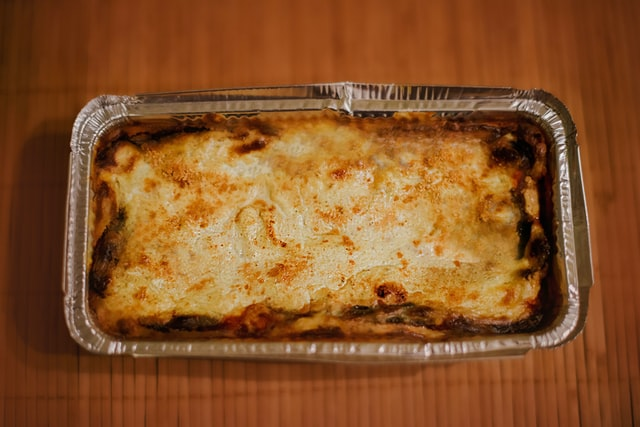

Vegetarian Lasagna

Description
This Vegatarian Lasagna, is like any other simple home made lasgna - except we shall be replacing the usual meat based filling with spinach, mushrooms and zuccini.
Lasagna is the name of one of the oldest and best-known pasta shapes.
It is usually rectangular or ribbon shaped, thicker than tagliatelle, made from a dough based on flour and eggs, with numerous local variants.
After being boiled, the rectangular lasagna noodles are drained and placed in layers with a filling that varies based on different local traditions.
Ingredients
Sauce:
- ¼ cup olive oil
- 1 onion, chopped
- 1 bay leaf
- 2 cloves garlic, chopped
- 2 teaspoons dried oregano
- 2 teaspoons dried basil
- 1 (14.5 ounce) can crushed tomatoes
- 1 (29 ounce) can diced tomatoes
- 1 pinch ground cinnamon
- 1 (16 ounce) package lasagna noodles
Cheese filling:
- 1 pint part-skim ricotta cheese
- 2 eggs, beaten
- ½ cup grated Parmesan cheese
- 2 teaspoons dried basil
- 1 clove garlic, minced
Vegetable filling:
- 2 tablespoons olive oil
- 1 onion, sliced
- 1 pound fresh mushrooms, sliced
- 1 pound spinach, rinsed and chopped
- 2 medium zucchini, sliced
- 1 pound mozzarella cheese, sliced
- 1 cup grated Parmesan cheese
Preparation Steps
- Heat 1/4 cup oil in a large skillet over medium heat.
Stir in chopped onions and bay leaf; cook and stir until the onion has softened and turned translucent, about 5 minutes.
Add 2 cloves minced garlic, oregano, and 2 teaspoons basil; cook and stir for 2 more minutes.
- Mix in undrained crushed tomatoes and diced tomatoes. B
ring to a boil, reduce heat, and simmer for 1 hour.
Stir in cinnamon and set pan aside.
- Mix in undrained crushed tomatoes and diced tomatoes.
Bring to a boil, reduce heat, and simmer for 1 hour.
Stir in cinnamon and set pan aside.
- Bring a large pot of salted water to boil, add lasagna noodles and bring water to boil again.
Cook until noodles are al dente. Drain well.
- Mix together ricotta, eggs, 1/2 cup Parmesan cheese, 2 teaspoons basil, and 1 clove minced garlic.
- Saute sliced onion and mushrooms in 2 tablespoons olive oil until tender, about 5 minutes.
Add spinach and zucchini to the skillet. Cover, and cook until spinach is wilted, 2 to 5 minutes.
Remove skillet from heat and set aside.
- Spread 1/2 cup of the tomato sauce in the prepared baking dish.
Place a layer of noodles on top of the tomato sauce; spread all of the ricotta mixture onto the noodles.
Place another layer of noodles on top of the ricotta mixture.
- Pour about 2 cups tomato sauce onto the noodles; arrange all of the sauteed vegetables on top of the sauce.
Top vegetables with noodles and spread the remaining tomato sauce over the final layer of noodles.
Top with mozzarella cheese slices and 1 cup grated Parmesan cheese.
- Bake the lasagna in the preheated oven until filling is bubbly and cheese is melted and beginning to brown, 45 minutes to 1 hour.
Remove the lasagna from the oven and let it cool 10 minutes before serving.